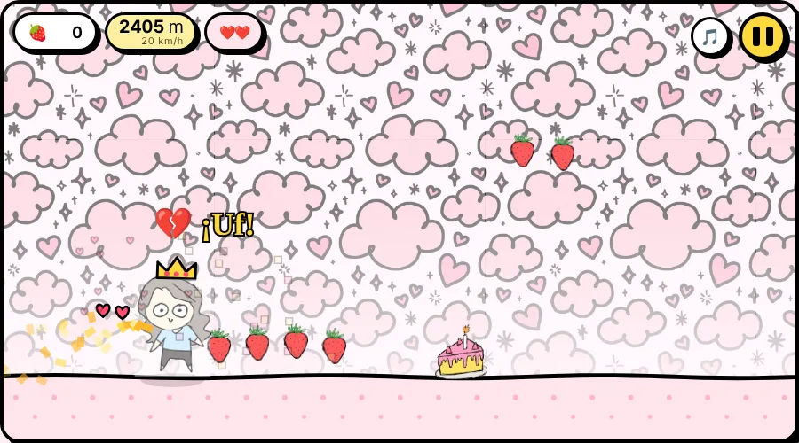
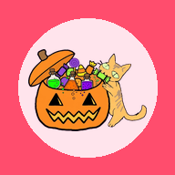

Tu bolsa: 0 frutillas
Tu bolsa: 0 frutillas

Dina Run
Corré sin parar · un toque
Saltá las tortas, juntá frutillas y elegí dulces en el camino. Si chocás, Dina sale a correrte. Con personajes, cosméticos, Pastelería y, en Halloween, su pase.
- 🏆 Ranking de todos
- ☁️ Guardado en la nube
- 🐱 5 personajes
- 📲 Instalable